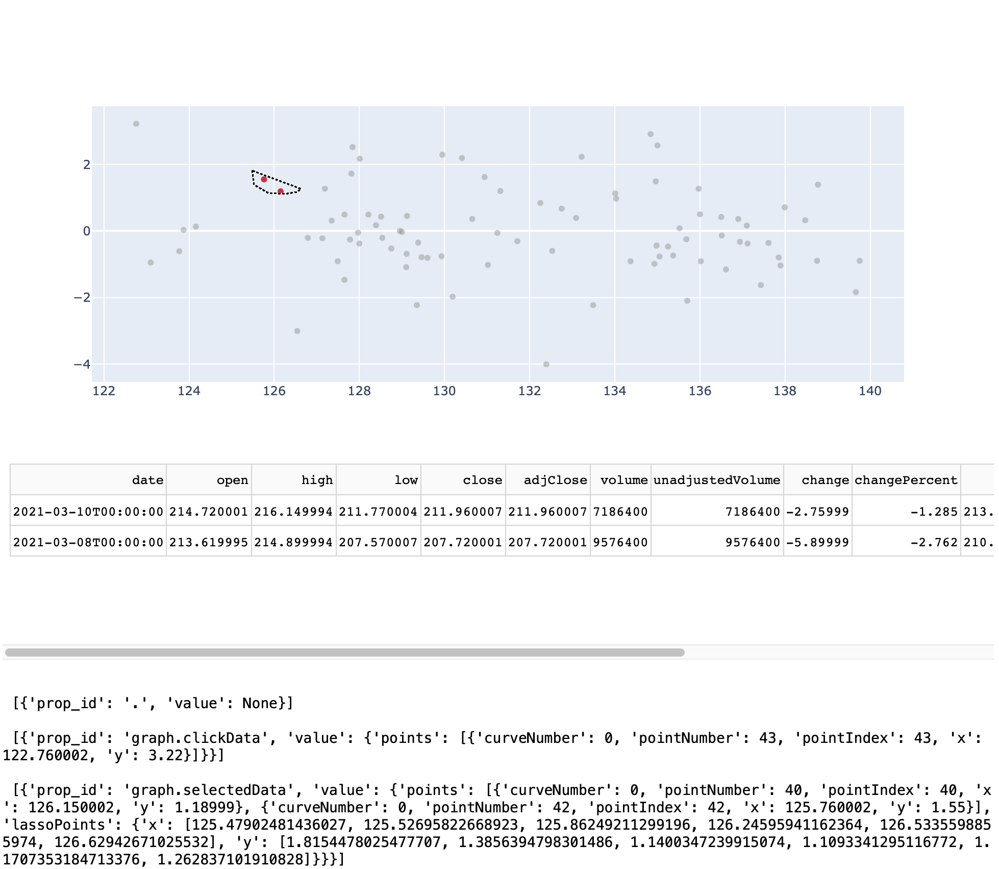

Dash - advanced interactivity¶
To provide advanced interactivity and reactivity, that is to let new input trigger modified output, we need to provide the content as the result of a function. We can have several functions, each modifying one specific element of the UI. To reference elements in the UI and the server part, we give a unique id to each element. This id is handed to the respective function to tell it that this is the input to be used. The same applies in the reversed direction: by specifying the id of the desired UI element as a function’s output, the created result is passed to the right address to be displayed. The declaration of what is input and output is done using decorators and callbacks. This decorator takes the input and output ids as arguments.
The structure for building an advanced reactive app becomes:
create a JupyterDash object
define the UI by using the
.layout()method:static elements are defined here
every interactive item gets an unique id which will identify the element as it is given to the server/UI. For example: An info text, which will not change during the use of the app would not need an id. A button to alter the content must get an id.
define the server functions for the content and use the
app.callback()decorator.this part will do any calculations or assignments for interactive elements. The output created here also gets an id to address it in the UI in order to display it at the desired location. The definition as callback ensures that every time an input changes, the respective function (having this element as input) is run to keep the content of the UI up-to-date, e.g. after clicking a button
the app is run using the
.run_server()method
Note that expensive operations like (down)loading a file should be placed outside the reactive environment, if possible. Else, the operation is triggered and run every time the input changes. For example when working with APIs: Place the request and loading of the data once upfront, before starting the app. Otherwise, the request will be sent unnecessarily for every change in input and soon the limit of requests per day is reached. In general, don’t change global variables inside the reactive environment.
To use the decorators and link input and output between server and UI, we need to import the functions Input and Output from dash.dependencies. We call these functions as arguments of app.callback().
Then, as arguments to Input and Output we need to specify the component_id for the referenced element and the component_property to specify what is returned as output.
The respective ids must be identical to the ones used in the UI. The properties vary, dependent on what the output of the function is:
Output:
'children': to return text to the'children'argument of html elements'figure': to return a plotly graphic todcc.Graph()'value': to return a standard value to an interactive element(
'options': to create options for interactive elements like dropdowns, dependent on earlier selection)
Input:
'value': use the value of an element as argument, e.g. an entered number'n_clicks': returns the number ahtml.Buttonhas been clicked(
'options': use options from an interactive element)
Let’s look at a first example.
Caution
The format used for these notes cannot display Dash apps.
To view an app, copy the respective code and run in a notebook yourself (uncomment app.run(…)).
from jupyter_dash import JupyterDash
import dash_core_components as dcc
import dash_html_components as html
from dash.dependencies import Input, Output
app = JupyterDash('myFirstReactive')
app.layout = html.Div([
html.P(children="Input: "),
dcc.Input(id='inum', value='', type='number'),
html.P(id='outext')
])
@app.callback(
Output(component_id='outext', component_property='children'),
Input(component_id='inum', component_property='value')
)
def div_outext(num):
return f'times two: {num*2}'
#app.run_server(mode='inline')
First, we instantiate the JupyterDash object.
Then, we modify the layout to contain the following elements inside the main Div:
a
Pelement saying ‘Input:’ $\rightarrow$ static, no need for an ida
dcc.Input()with a unique id, a default value (empty string, otherwise it would say ‘None’) and thetypeof the input to create the according field type in the UIanother
Pelement with only an id and no children
Then, we define the server function to create the output: the function per se takes one argument and creates a string containing it after being multiplied by two.
This function, however, gets decorated with app.callback(). This is where the linking between the function and the UI happens.
app.callback() gets Output() and Input() as arguments. Each of which have arguments component_id= and component_property=:
to
Output, we pass the id of the secondPelement, which in the definition of the layout did not have achildrenargument. This omission becomes clearer when we see that we now passcomponent_property='children'. In prose, this means: Take the result of the decorated function and supply it to the UI element withcomponent_id='outext'as achildrenelement.to
Inputwe pass thecomponent_id='inum'andcomponent_property='value'. This means, that the value of the input variable ‘inum’, defined by the input fielddcc.Input()should be taken as the input to the decorated function, where it can be processed.
Every time we change the input by entering a number or clicking the arrows in the input field, the function gets called and the output is updated.
Note that when starting an app, Dash will run all available callbacks. This is why we omitted the children in the definition of the second P element when defining the layout: Any value we would enter here, would instantly be overwritten by the callback.
More inputs & outputs¶
We will slightly alter the first example above to demonstrate that several inputs and outputs can be used by one function. The syntax is the same, we just add more Input() and Output() to the decorator call.
from dash.dependencies import Input, Output
app = JupyterDash()
app.layout = html.Div([
html.Div(["Enter first and last name: ",
dcc.Input(id='fname_i', value='otto', type='text'),
dcc.Input(id='lname_i', value='renner', type='text')]),
html.Br(),
html.Div([html.P(id='fname_o', style={'float': 'left'}),
html.P(id='lname_o', style={'float': 'left','marginLeft': 4})] )
])
@app.callback(
Output(component_id='fname_o', component_property='children'),
Output(component_id='lname_o', component_property='children'),
Input(component_id='fname_i', component_property='value'),
Input(component_id='lname_i', component_property='value')
)
def div_outext(fname, lname):
if fname:
return fname[::-1], lname[::-1]
#app.run_server(mode='inline')
To use several Inputs, we need to look at the order of the Inputs in the callback. It must match the order of the arguments in the decorated function, i.e. the first Input will be passed as the first argument to the function. In the example above, fname_i is passed to the function as the fname argument.
For several Outputs, the same applies: the order of Outputs in the callback must match the order after return.
Sliders and buttons¶
Dash includes elements knwon from plotly, like sliders and buttons. They are implemented in dcc. Some are also part of html like html.Button (having the n_clicks attribute).
To use interactive elements, we must take their input and pass it to a function by the callback decorator. There, we can use the value to return updated content of an element.
In the following example, we will use a slider input to filter the copy(!) of a global dataframe, containing the prices of 100 days for all companies listed in the dow jones. The Filtering is done using pandas indexing, as usual. We then use this filtered dataframe to create a figure.
In the dataframe, we limit ourselves to the year 2021 and introduce a new variable: month, as a number from 1 (January) to 12 (December)
import pandas as pd
import datetime as dt
import plotly.express as px
df = pd.read_csv('data/dji_sector_prices.csv')
df.date = pd.to_datetime(df.date)
df = df[df.date.dt.year == 2021]
df['month'] = [el.month for el in df.date]
month_marks = {i+1:str(i+1) for i in range(df.month.max())}
app = JupyterDash()
app.layout = html.Div([
dcc.Slider(
id='comp_slider',
min= min(df.month),
max= max(df.month),
marks=month_marks,
value=5
),
dcc.Dropdown(id='company_dd',
options = [{'label': i, 'value': i} for i in df.symbol.unique()],
value = df.symbol.unique()[0]),
dcc.Graph(id='outgraph')
])
@app.callback(
Output('outgraph', 'figure'),
Input('comp_slider', 'value'),
Input('company_dd', 'value')
)
def make_outgraph(month, sym):
dftemp = df[df.symbol == sym]
dftemp = dftemp[dftemp.month == month]
fig = px.line(dftemp, x='date', y='open')
return fig
#app.run_server(mode='inline)
Every time we change an input, either by changing the slider position or selecting a different company, the function gets called and the graph is created for the respective input.
States¶
So far, every time we change an input, the callback is fired and the output is updated. This can be prevented by using State() as substitute for Input(). State() will accept the same two arguments as Input(): an id and a property.
In contrast to Input, elements referenced as input in State() will not trigger any updates when changed in the UI. Note that this requires at least one other element (like a ‘submit’ button) to trigger the updates, else the app would not respond at all to new inputs.
The order in the decorator call is Output() first, then Input() followed by State().
We will extend the example above to include an additional update button and let the slider and dropdown input be state inputs.
The graphic will only update when a new selection is confirmed by clicking the button.
from dash.dependencies import State
app = JupyterDash()
white_button_style = {'background-color': 'grey',
'color': 'white',
'height': '50px',
'width': '100px',
'margin-top': '5px',
'margin-left': '5px'}
app.layout = html.Div([
dcc.Slider(
id='comp_slider',
min= min(df.month),
max= max(df.month),
marks=month_marks,
value=5
),
dcc.Dropdown(id='company_dd',
options = [{'label': i, 'value': i} for i in df.symbol.unique()],
value = df.symbol.unique()[0], style=dict(width='400px')),
html.Button('Update', id='update', n_clicks=0, style=white_button_style),
dcc.Graph(id='outgraph')
])
@app.callback(
Output('outgraph', 'figure'),
Input('update', 'n_clicks'),
State('comp_slider', 'value'),
State('company_dd', 'value')
)
def make_outgraph(n_clicks, month, sym):
dftemp = df[df.symbol == sym]
dftemp = dftemp[dftemp.month == month]
fig = px.line(dftemp, x='date', y='open')
return fig
#app.run_server(mode='inline')
Dynamic conditional input¶
We will use the same dataframe to show an example of an reactive Input element, i.e. the options for one input element are based on the selection of a previous element.
This can be achieved using 'options' as output property to set these for another interactive element, e.g. a button or dropdowns.
We also use a chained callback, meaning the output of one callback serves the following one as input.
In the case of this dataframe, we have sectors, where at least one company per sector. Therefore, we can provide options of a company dropdown to select a company based on the previous selection from a sector dropdown.
We will display two dropdowns, the lower one with conditional options and no further output for simplicity.
app = JupyterDash()
app.layout = html.Div([
dcc.Dropdown(id='sector_dd',
options = [{'label': i, 'value': i} for i in df.sector.unique()],
value = df.sector.unique()[0]),
dcc.Dropdown(id='company_dd',
value = df.symbol.unique()[0])
])
@app.callback(
Output('company_dd', 'options'),
Input('sector_dd', 'value')
)
def set_options_company_dd(sector):
return [{'label': i, 'value': i} for i in df[df.sector==sector].symbol.unique()]
@app.callback(
Output('company_dd', 'value'),
Input('company_dd', 'options')
)
def set_default_company_dd(ops):
return ops[0]['value']
#app.run_server(mode='inline')
The basic syntax stays the same as in the examples before. It is crucial here, however, to provide the right format when returning the options in set_options_company_dd as a list of dictionaries. Note also the filtering by sector.
To set the default value in set_default_company_dd, we take all options (they are returned by the function before) as input and return the 'value' of the first element (at index 0).
Selecting points from a graph¶
As we have seen in the chapter on plotly, the graphics include selection tools in the tool bar. Using Dash, we can interactively work with these selections. We can for example show a more detailed analysis of these data points only or show some of their characteristics in a second graph.
The plotly figure attributes of interest to work with selected data points are 'selectedData' and 'clickData', which we provide as input to the callback.
In the following example, we use only one company for simplicity. We create a graph with build_figure() where we set the default operation to the lasso selection. The box selection and all other tools from the tool bar are still available.
Below the graph, we display an empty table, i.e. only the column names.
Note that the callback includes a print() statement. This is merely for showing what format the click or lasso selection takes on inside the callback:
starting the app,
callback_contextis empty.after clicking on one point,
'prop_id'gets a value of'graph.clickData',, which we can use as condition for a single line of output in the table. We do so by accessing the point’s index in the dataframe using a list comprehension for the callback context.after using the lasso selection with at least on point included,
'prop_id'gets a value of'graph.selectedData',. in the callback context, the list ‘points’ now has more than one element and we use the same list comprehension as before to extract a list of indices to pass it to the dataframe to filter for the output.
import dash_table
import plotly.graph_objects as go
import dash
app = JupyterDash()
def build_figure(df):
fig = go.Figure(go.Scatter(x=df.open, y=df.change,
marker={'color': 'gray'},
mode='markers',
selected={'marker': {'color': 'Crimson'}},
unselected={'marker': {'opacity': 0.4}}),
)
fig.update_layout(dragmode='lasso')
return fig
app.layout = html.Div([
dcc.Graph(id='graph', figure=build_figure(df[df.symbol == 'PG'])),
dash_table.DataTable(id='table',
columns = [{'name': col, 'id': col} for col in df.columns])
])
@app.callback(
Output('table', 'data'),
[Input("graph", "selectedData"),
Input("graph", "clickData")])
def update_table(selectedData, clickData):
selection = None
data = None
trigger = dash.callback_context.triggered[0]["prop_id"]
if trigger == 'graph.clickData':
selection = [point["pointIndex"] for point in clickData["points"]]
data=df.iloc[selection].to_dict(orient='records')
if trigger == 'graph.selectedData':
selection = [point["pointIndex"] for point in selectedData["points"]]
data=df.iloc[selection].to_dict(orient='records')
print('\n', dash.callback_context.triggered)
return data
#app.run_server(mode='inline')
This is only a picture of the app. The printed statements at the bottom show:
the empty context when starting the app
a single selection by clicking
lasso selection of two points (red in graph) 
This introduction to and display of Dash’s functionality is not at all complete and is not intended to be. For the creation of your own app, please scan the (left column) in the documentation to find other useful elements.
Deployment¶
It is possible to deploy Dash apps online (also for free) using git. We will not cover this procedure here and instead refer to the documentation.
Extra: Decorators¶
Functions which expand the functionality of another function are called decorators (or wrappers). However, these decorators do not change the underlying function, i.e. the one that gets decorated.
This is possible since functions, just like anything in python, are objects and can get passed as arguments to other functions (we have seen this in the context of callbacks). Furthermore, functions may be defined inside other functions, using the the same syntax as usual.
Let’s look at a simple example of a function and a wrapper/decorator.
The initial function text_to_wrap simply prints a string. The decorator returns the wrapper() function, which adds a line above and below the text, when printing.
def text_to_wrap():
print('my text')
text_to_wrap()
my text
def emphasize_decorator(func):
def wrapper():
print('##################')
func()
print('!!!!!!!!!!!!!!!!!!')
return wrapper
To decorate text_to_wrap, we can assign the decorator with ‘text_to_wrap’ as argument to the initial function name. Note that we pass the function name without parentheses.
text_to_wrap = emphasize_decorator(text_to_wrap)
text_to_wrap()
##################
my text
!!!!!!!!!!!!!!!!!!
To shorten this procedure, python includes a special syntax for decorators. With @emphasize_decorator (no parentheses!) before the definition of the inner function, we can achieve the same behaviour.
# emphasize_decorator is being treated as already defined
@emphasize_decorator
def print_greeting():
print('Hello')
print_greeting()
##################
Hello
!!!!!!!!!!!!!!!!!!
We see, that print_greeting() has initially been defined to print ‘Hello’. With the decorator call using @, however, we have decorated it on the fly to add the emphasis lines around the text from emphasize_decorator(). Furthermore, decorators may be chained by subsequent calls of the decorator functions with the same @-syntax before the definition of the inner function.
To pass arguments through the decorator, we can use *args and **kwargs as placeholder for an arbitrary number of positional arguments and keyword arguments. Note that this is not unique for decorators, but can be used for the definition of any function! We will now update the first two examples from above:
- text_to_wrap will get two arguments to print
- wrapper inside emphasize_decorator will get the placeholders in it’s definition
def emphasize_decorator(func):
def wrapper(*args, **kwargs):
print('##################')
func(*args, **kwargs)
print('!!!!!!!!!!!!!!!!!!')
return wrapper
@emphasize_decorator
def text_to_wrap(w1, w2):
print(f"{w1}\n{w2}")
text_to_wrap('line1', 'line2')
##################
line1
line2
!!!!!!!!!!!!!!!!!!
This is what dash does with the functions defined in the server part: These functions get wrapped to be linked automatically to the UI and to get called every time, the respective input changes.